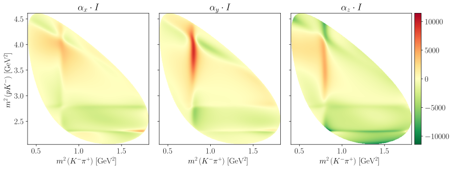
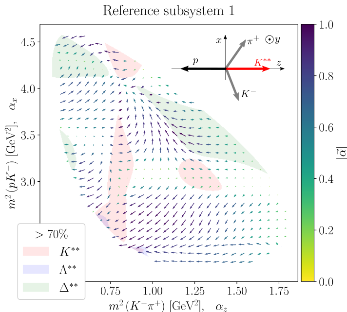
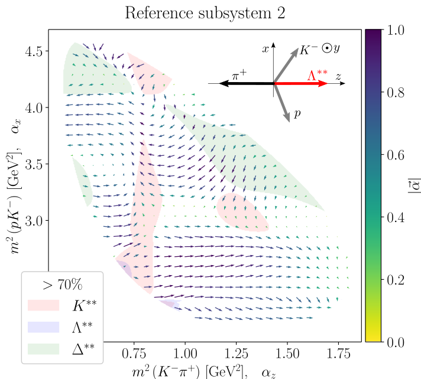
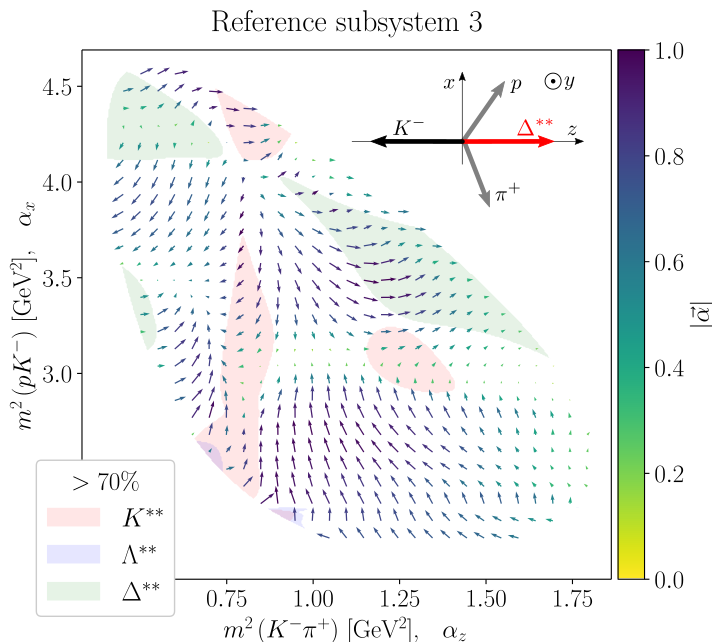
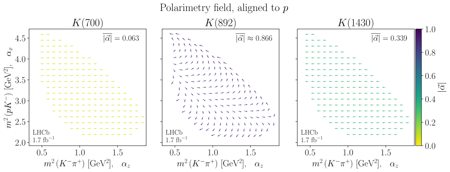
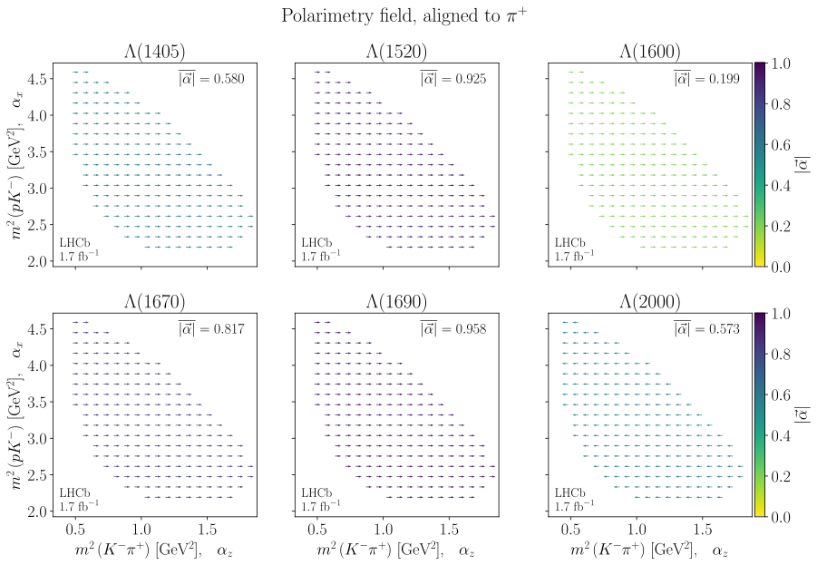
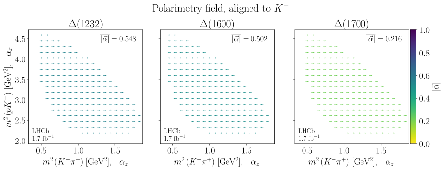
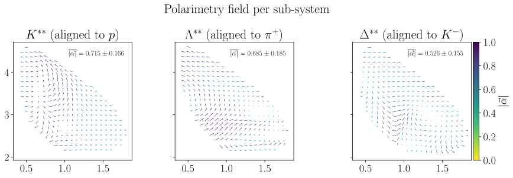

4. Polarimeter vector field#
Import python libraries
Hide code cell content
import logging
import math
import os
import shutil
from functools import reduce
from warnings import filterwarnings
import attrs
import cloudpickle
import jax.numpy as jnp
import matplotlib.pyplot as plt
import numpy as np
import svgutils.compose as sc
import sympy as sp
from ampform.sympy._cache import cache_to_disk
from ampform_dpd.io import cached
from IPython.display import SVG, display
from matplotlib.axes import Axes
from matplotlib.collections import LineCollection
from matplotlib.colors import LogNorm
from matplotlib.patches import Patch
from matplotlib_inline.backend_inline import set_matplotlib_formats
from tensorwaves.interface import DataSample, ParametrizedFunction
from tqdm.auto import tqdm
from polarimetry import formulate_polarimetry
from polarimetry.data import create_data_transformer, generate_meshgrid_sample
from polarimetry.function import compute_sub_function
from polarimetry.io import mute_jax_warnings
from polarimetry.lhcb import (
flip_production_coupling_signs,
load_model_builder,
load_model_parameters,
)
from polarimetry.lhcb.particle import load_particles
from polarimetry.plot import (
add_watermark,
get_contour_line,
reduce_svg_size,
use_mpl_latex_fonts,
)
filterwarnings("ignore")
mute_jax_warnings()
set_matplotlib_formats("svg")
NO_LOG = "EXECUTE_NB" in os.environ
if NO_LOG:
logging.disable(logging.CRITICAL)
{kind=link}
/home/runner/work/polarimetry/polarimetry/.venv/lib/python3.13/site-packages/svgutils/compose.py:379: SyntaxWarning: invalid escape sequence '\.'
m = re.match("([0-9]+\.?[0-9]*)([a-z]+)", measure)
ID |
Final state / recoil |
Subsystem / resonance |
|---|---|---|
1 |
\(p\) |
\(K^{**} \to \pi^+ K^-\) |
2 |
\(\pi^+\) |
\(\Lambda^{**} \to K^- p\) |
3 |
\(K^-\) |
\(\Delta^{**} \to p \, \pi^+\) |
Formulate amplitude models
Hide code cell source
model_choice = 0
model_file = "../data/model-definitions.yaml"
particles = load_particles("../data/particle-definitions.yaml")
amplitude_builder = load_model_builder(model_file, particles, model_choice)
imported_parameter_values = load_model_parameters(
model_file, amplitude_builder.decay, model_choice, particles
)
models = {}
for reference_subsystem in (1, 2, 3):
models[reference_subsystem] = amplitude_builder.formulate(
reference_subsystem, cleanup_summations=True
)
models[reference_subsystem] = attrs.evolve(
models[reference_subsystem],
parameter_defaults={
**models[reference_subsystem].parameter_defaults,
**imported_parameter_values,
},
)
models[2] = flip_production_coupling_signs(models[2], subsystem_names=["K", "L"])
models[3] = flip_production_coupling_signs(models[3], subsystem_names=["K", "D"])
DECAY = models[1].decay
FINAL_STATE = {
1: "p",
2: R"\pi^+",
3: "K^-",
}
Unfold symbolic expressions
Hide code cell source
@cache_to_disk(dependencies=["ampform", "ampform-dpd", "polarimetry-lc2pkpi", "sympy"])
def unfold_expressions() -> tuple[
dict[int, sp.Expr],
dict[int, tuple[sp.Expr, sp.Expr, sp.Expr]],
]:
unfolded_polarimetry_exprs: dict[int, tuple[sp.Expr, sp.Expr, sp.Expr]] = {}
unfolded_intensity_expr: dict[int, sp.Expr] = {}
for i, model in tqdm(models.items(), "Unfolding expressions", disable=NO_LOG):
reference_subsystem = i
polarimetry_exprs = formulate_polarimetry(
amplitude_builder, reference_subsystem
)
unfolded_polarimetry_exprs[i] = tuple( # ty:ignore[invalid-assignment]
cached.unfold(expr, model.amplitudes)
for expr in tqdm(polarimetry_exprs, disable=NO_LOG, leave=False)
)
unfolded_intensity_expr[i] = cached.unfold(model)
return unfolded_intensity_expr, unfolded_polarimetry_exprs
unfolded_intensity_expr, unfolded_polarimetry_exprs = unfold_expressions()
Convert to numerical functions
Hide code cell source
@cache_to_disk(
dependencies=[
"ampform",
"ampform-dpd",
"jax",
"numpy",
"polarimetry-lc2pkpi",
"sympy",
],
dump_function=cloudpickle.dump,
)
def lambdify_expressions() -> tuple[
dict[int, ParametrizedFunction],
dict[int, list[ParametrizedFunction]],
]:
polarimetry_funcs = {}
intensity_func = {}
for i, model in tqdm(models.items(), "Lambdifying to JAX", disable=NO_LOG):
production_couplings = {
symbol: value
for symbol, value in model.parameter_defaults.items()
if isinstance(symbol, sp.Indexed)
if "production" in str(symbol)
}
fixed_parameters = {
symbol: value
for symbol, value in model.parameter_defaults.items()
if symbol not in production_couplings
}
polarimetry_funcs[i] = [
cached.lambdify(
cached.xreplace(expr, fixed_parameters),
parameters=production_couplings, # ty:ignore[invalid-argument-type]
)
for expr in tqdm(unfolded_polarimetry_exprs[i], disable=NO_LOG, leave=False)
]
intensity_func[i] = cached.lambdify(
cached.xreplace(unfolded_intensity_expr[i], fixed_parameters),
parameters=production_couplings, # ty:ignore[invalid-argument-type]
)
return intensity_func, polarimetry_funcs
intensity_func, polarimetry_funcs = lambdify_expressions()
Generate grid phase space sample
Hide code cell source
data_sample = generate_meshgrid_sample(DECAY, resolution=400)
X = data_sample["sigma1"]
Y = data_sample["sigma2"]
for model in models.values():
transformer = create_data_transformer(model)
data_sample.update(transformer(data_sample))
4.1. Dominant contributions#
Code for indicating sub-regions
Hide code cell content
def create_dominant_region_contours(
decay, data_sample: DataSample, threshold: float
) -> dict[str, jnp.ndarray]:
I_tot = intensity_func[1](data_sample)
resonances = [chain.resonance for chain in decay.chains]
region_filters = {}
progress_bar = tqdm(
desc="Computing dominant region contours",
disable=NO_LOG,
total=len(resonances),
)
for resonance in resonances:
progress_bar.postfix = resonance.name
I_sub = compute_sub_function(intensity_func[1], data_sample, [resonance.latex])
ratio = I_sub / I_tot
selection = jnp.select(
[jnp.isnan(ratio), ratio < threshold, True],
[0, 0, 1],
)
progress_bar.update()
if jnp.all(selection == 0):
continue
region_filters[resonance.name] = selection
contour_arrays = {}
for contour_level, subsystem in enumerate(["K", "L", "D"], 1):
contour_array = reduce(
jnp.bitwise_or,
(a for k, a in region_filters.items() if k.startswith(subsystem)),
)
contour_array *= contour_level
contour_arrays[subsystem] = contour_array
return contour_arrays
def indicate_dominant_regions(
contour_arrays, ax: Axes, selected_subsystems=None
) -> dict[str, LineCollection]:
if selected_subsystems is None:
selected_subsystems = {"K", "L", "D"}
selected_subsystems = set(selected_subsystems)
colors = dict(K="red", L="blue", D="green")
labels = dict(K="K^{**}", L=R"\Lambda^{**}", D=R"\Delta^{**}")
legend_elements: dict[str, LineCollection] = {}
for subsystem, Z in contour_arrays.items():
if subsystem not in selected_subsystems:
continue
contour_set = ax.contour(
*(X, Y, Z),
colors=[colors[subsystem]],
linewidths=[0.1],
)
line_collection = get_contour_line(contour_set)
legend_elements[f"${labels[subsystem]}$"] = line_collection # ty:ignore[invalid-assignment]
return legend_elements
Show code cell source
Hide code cell source
%%time
subsystem_identifiers = ["K", "L", "D"]
subsystem_labels = ["K^{**}", R"\Lambda^{**}", R"\Delta^{**}"]
nrows = 4
ncols = 5
scale = 3.0
aspect_ratio = 1.05
plt.rcdefaults()
use_mpl_latex_fonts()
plt.rc("font", size=15)
fig, axes = plt.subplots(
dpi=200,
figsize=scale * np.array([ncols, aspect_ratio * nrows]),
gridspec_kw={"width_ratios": (ncols - 1) * [1] + [1.24]},
ncols=ncols,
nrows=nrows,
sharex=True,
sharey=True,
)
fig.patch.set_facecolor("none")
fig.subplots_adjust(wspace=0.05)
s1_label = R"$m^2\left(K^-\pi^+\right)$ [GeV$^2$]"
s2_label = R"$m^2\left(pK^-\right)$ [GeV$^2$]"
for subsystem in range(nrows):
for i in range(ncols):
ax = axes[subsystem, i]
if i == 0:
alpha_str = R"I_\mathrm{tot}"
elif i == 1:
alpha_str = R"|\alpha|"
else:
xyz = i - 2
alpha_str = Rf"\alpha_{'xyz'[xyz]}"
title = alpha_str
if subsystem > 0:
label = subsystem_labels[subsystem - 1]
title = Rf"{title}\left({label}\right)"
ax.set_title(f"${title}$")
if ax is axes[-1, i]:
ax.set_xlabel(s1_label)
if i == 0:
ax.set_ylabel(s2_label)
intensity_arrays = []
polarimetry_arrays = []
for subsystem in range(nrows):
# alpha_xyz distributions
alpha_xyz_arrays = []
for i in range(2, ncols):
xyz = i - 2
if subsystem == 0:
z_values = polarimetry_funcs[1][xyz](data_sample)
polarimetry_arrays.append(z_values)
else:
identifier = subsystem_identifiers[subsystem - 1]
z_values = compute_sub_function(
polarimetry_funcs[1][xyz], data_sample, [identifier]
)
z_values = np.real(z_values)
alpha_xyz_arrays.append(z_values)
mesh = axes[subsystem, i].pcolormesh(
X, Y, z_values, cmap="coolwarm", rasterized=True
)
mesh.set_clim(vmin=-1, vmax=+1)
if xyz == 2:
c_bar = fig.colorbar(mesh, ax=axes[subsystem, i])
c_bar.set_ticks([-1, 0, +1])
c_bar.set_ticklabels(["-1", "0", "+1"])
# absolute value of alpha_xyz vector
alpha_abs = np.sqrt(np.sum(np.array(alpha_xyz_arrays) ** 2, axis=0))
mesh = axes[subsystem, 1].pcolormesh(
X, Y, alpha_abs, cmap="coolwarm", rasterized=True
)
mesh.set_clim(vmin=-1, vmax=+1)
# total intensity
if subsystem == 0:
z_values = intensity_func[1](data_sample)
else:
identifier = subsystem_identifiers[subsystem - 1]
z_values = compute_sub_function(intensity_func[1], data_sample, [identifier])
intensity_arrays.append(z_values)
axes[subsystem, 0].pcolormesh(X, Y, z_values, norm=LogNorm(), rasterized=True)
threshold = 0.7
contour_arrays = create_dominant_region_contours(DECAY, data_sample, threshold)
for ax in axes[0]:
legend_elements = indicate_dominant_regions(contour_arrays, ax)
if ax is axes[0, -1]:
leg = ax.legend(
handles=legend_elements.values(),
labels=legend_elements.keys(),
title=Rf"$>{100 * threshold:.0f}\%$",
bbox_to_anchor=(0.9, 0.88, 1.0, 0.1),
framealpha=1,
)
for subsystem, ax_row in zip(["K", "L", "D"], axes[1:], strict=True):
for ax in ax_row:
indicate_dominant_regions(contour_arrays, ax, selected_subsystems=[subsystem])
plt.show()

CPU times: user 2min 11s, sys: 462 ms, total: 2min 11s
Wall time: 2min 1s
Show code cell source
Hide code cell source
plt.rcdefaults()
use_mpl_latex_fonts()
plt.rc("font", size=16)
fig, axes = plt.subplots(
dpi=200,
figsize=(13, 5),
gridspec_kw={"width_ratios": [1, 1, 1.2]},
ncols=3,
sharey=True,
tight_layout=True,
)
fig.patch.set_facecolor("none")
for ax in axes:
ax.patch.set_color("none")
axes[0].set_ylabel(s2_label)
I_times_alpha = jnp.array([array * intensity_arrays[0] for array in polarimetry_arrays])
global_min_max = float(jnp.nanmax(jnp.abs(I_times_alpha)))
for ax, z_values, xyz in zip(axes, I_times_alpha, "xyz", strict=True):
ax.set_title(Rf"$\alpha_{xyz} \cdot I$")
ax.set_xlabel(s1_label)
mesh = ax.pcolormesh(X, Y, np.real(z_values), cmap="RdYlGn_r", rasterized=True)
mesh.set_clim(vmin=-global_min_max, vmax=global_min_max)
if ax is axes[-1]:
fig.colorbar(mesh, ax=ax, pad=0.02)
plt.show()

4.2. Total polarimetry vector field#
Show code cell source
Hide code cell source
def plot_field(
reference_subsystem: int,
contour_arrays: dict[str, jnp.ndarray] | None = None,
threshold: float | None = None,
add_title: bool = False,
watermark: bool = False,
show: bool = False,
) -> None:
plt.ioff()
plt.rcdefaults()
use_mpl_latex_fonts()
plt.rc("font", size=18)
fig, ax = plt.subplots(
figsize=(8, 6.8),
tight_layout=True,
)
fig.patch.set_facecolor("none")
if add_title:
ax.set_title(f"Reference subsystem {reference_subsystem}", y=1.02)
ax.set_box_aspect(1)
ax.set_xlabel(X_LABEL_ALPHA)
ax.set_ylabel(Y_LABEL_ALPHA)
polarimetry_arrays = [
func(data_sample) for func in polarimetry_funcs[reference_subsystem]
]
polarimetry_arrays = jnp.array(polarimetry_arrays).real
mesh = plot_polarimetry_field(polarimetry_arrays, ax, strides=14)
color_bar = fig.colorbar(mesh, ax=ax, pad=0.01)
color_bar.set_label(R"$\left|\vec{\alpha}\right|$")
if contour_arrays is not None and threshold is not None:
color_bar.ax.set_zorder(-10)
xlim = ax.get_xlim()
ylim = ax.get_ylim()
_add_contours(ax, contour_arrays, threshold)
ax.set_xlim(*xlim)
ax.set_ylim(*ylim)
if watermark:
x_pos = 0.05 if contour_arrays is None else 0.2
add_watermark(ax, x_pos, 0.04, fontsize=18)
subsystem_id_to_name = {1: "K", 2: "L", 3: "D"}
subsystem_name = subsystem_id_to_name[reference_subsystem]
suffixes = [
"-contours" if contour_arrays else "",
"-title" if add_title else "",
"-watermark" if watermark else "",
]
suffix = "".join(suffixes)
base_file = f"_static/images/polarimetry-field-{subsystem_name}{suffix}.svg"
fig.savefig(base_file, bbox_inches="tight")
reduce_svg_size(base_file)
plt.close(fig)
plt.ion()
overlay_file = f"_images/orientation-{subsystem_name}.svg"
output_file = base_file.replace(".svg", "-inset.svg")
y_pos = 0.08 if add_title else 0.058
svg = overlay_inset(
base_file,
overlay_file,
output_file,
position=(0.353, y_pos),
)
if show:
display(svg)
def _add_contours(
ax,
contour_arrays: dict[str, jnp.ndarray],
threshold: float,
) -> None:
colors = dict(K="red", L="blue", D="green")
labels = dict(K="K^{**}", L=R"\Lambda^{**}", D=R"\Delta^{**}")
patch_transparency = 0.1
for subsystem, Z in contour_arrays.items():
ax.contourf(
*(X, Y, Z),
alpha=patch_transparency,
colors=[colors[subsystem]],
levels=[0.9 * Z.max(), 1.1 * Z.max()],
zorder=-5,
)
legend_elements = {
f"${labels[subsystem]}$": Patch(
alpha=patch_transparency,
facecolor=color,
)
for subsystem, color in colors.items()
}
ax.legend(
bbox_to_anchor=(0.20, 0.25),
framealpha=1,
handles=legend_elements.values(),
labels=legend_elements.keys(),
loc="upper right",
prop={"size": 19},
title=Rf"$>{100 * threshold:.0f}\%$",
)
def plot_polarimetry_field(polarimetry_arrays, ax, strides=12, cmap="viridis_r"):
alpha_abs = jnp.sqrt(jnp.sum(polarimetry_arrays**2, axis=0))
mesh = ax.quiver(
X[::strides, ::strides],
Y[::strides, ::strides],
np.real(polarimetry_arrays[2][::strides, ::strides]),
np.real(polarimetry_arrays[0][::strides, ::strides]),
np.real(alpha_abs[::strides, ::strides]),
cmap=cmap,
)
mesh.set_clim(vmin=0, vmax=+1)
return mesh
def overlay_inset(
base_file: str,
overlay_file: str,
output_file: str | None = None,
position: tuple[float, float] = (0.355, 0.08),
scale: float = 1 / 240,
show: bool = False,
) -> SVG:
if output_file is None:
output_file = base_file
if "_static/images/" not in base_file:
base_file = f"_static/images/{base_file}"
if "_images/" not in overlay_file:
overlay_file = f"_images/{overlay_file}"
if "_static/images/" not in output_file:
output_file = f"_static/images/{output_file}"
base_figure = sc.SVG(base_file)
overlay_figure = sc.SVG(overlay_file)
factor = 1.1
assert base_figure._width is not None
assert base_figure._height is not None
w = factor * base_figure._width.value
h = factor * base_figure._height.value
new_x = position[0] * w
new_y = position[1] * h
figure = sc.Figure(
w,
h,
sc.Panel(base_figure),
sc.Panel(overlay_figure).scale(scale * w).move(new_x, new_y),
).scale(1.4)
figure.save(output_file)
plt.close(fig)
svg = SVG(output_file)
if show:
display(svg)
return svg
X_LABEL_ALPHA = s1_label + R",$\quad \alpha_z$"
Y_LABEL_ALPHA = s2_label + R",$\quad \alpha_x$"
threshold = 0.7
contour_arrays = create_dominant_region_contours(DECAY, data_sample, threshold)
for ref in tqdm([1, 2, 3], leave=False):
args = (ref, contour_arrays, threshold)
plot_field(*args, add_title=True, watermark=False, show=True)
plot_field(*args, add_title=True, watermark=True)
plot_field(*args, add_title=False, watermark=False)
plot_field(*args, add_title=False, watermark=True)
plot_field(ref, add_title=True, watermark=False)
plot_field(ref, add_title=True, watermark=True)
plot_field(ref, add_title=False, watermark=False)
plot_field(ref, add_title=False, watermark=True)
del args, ref



4.3. Aligned vector fields per chain#
Show code cell source
Hide code cell source
def plot_field_per_resonance(reference_subsystem: int, watermark: bool) -> None:
spectator = FINAL_STATE[reference_subsystem]
subsystem_name = subsystem_identifiers[reference_subsystem - 1]
subsystem_resonances = [
chain.resonance
for chain in DECAY.chains
if chain.resonance.name.startswith(subsystem_name)
]
ncols = 3
nrows = math.ceil(len(subsystem_resonances) / ncols)
fig, axes = plt.subplots(
figsize={1: (13, 5), 2: (13, 9.0)}[nrows],
gridspec_kw={"width_ratios": [1, 1, 1.06]},
ncols=3,
nrows=nrows,
sharex=True,
sharey=True,
tight_layout=True,
)
fig.patch.set_facecolor("none")
fig.suptitle(
f"Polarimetry field, aligned to ${spectator}$",
y={1: 0.95, 2: 0.97}[nrows],
)
for i, (ax, resonance) in enumerate(
zip(axes.flatten(), subsystem_resonances, strict=True)
):
ax.set_box_aspect(1)
polarimetry_field = [
compute_sub_function(
func, data_sample, non_zero_couplings=[resonance.latex]
)
for func in polarimetry_funcs[reference_subsystem]
]
polarimetry_field = jnp.array(polarimetry_field).real
abs_alpha = jnp.sqrt(jnp.sum(polarimetry_field**2, axis=0))
mesh = plot_polarimetry_field(
polarimetry_field,
ax=ax,
strides=22,
)
mean = jnp.nanmean(abs_alpha)
std = jnp.nanstd(abs_alpha)
text = Rf"$\overline{{\left|\vec\alpha\right|}} = {mean:.3f}$"
if round(std, 3) != 0:
text = text.replace("=", R"\approx")
ax.text(
x=1.80,
y=4.44,
s=text,
fontsize=16,
horizontalalignment="right",
)
ax.set_title(f"${resonance.latex}$")
if i // 3 == nrows - 1:
ax.set_xlabel(X_LABEL_ALPHA)
if i % 3 == 0:
ax.set_ylabel(Y_LABEL_ALPHA)
if i % 3 == 2:
color_bar = fig.colorbar(mesh, ax=ax, fraction=0.0472, pad=0.01)
color_bar.set_label(R"$\left|\vec{\alpha}\right|$")
if watermark:
add_watermark(ax, fontsize=14)
output_file = f"polarimetry-{subsystem_name}-chains"
if watermark:
output_file += "-watermark"
output_path = f"_static/images/{output_file}.svg"
fig.savefig(output_path, bbox_inches="tight")
reduce_svg_size(output_path)
if watermark:
plt.show()
plt.close(fig)
plt.ion()
for reference_subsystem in tqdm([1, 2, 3], disable=NO_LOG):
plot_field_per_resonance(reference_subsystem, watermark=False)
plot_field_per_resonance(reference_subsystem, watermark=True)
del reference_subsystem



Show code cell source
Hide code cell source
fig, axes = plt.subplots(
figsize=(13, 4.5),
gridspec_kw={"width_ratios": [1, 1, 1.14]},
ncols=3,
sharey=True,
tight_layout=True,
)
fig.patch.set_facecolor("none")
fig.suptitle("Polarimetry field per sub-system", y=0.95)
items = zip(axes, [1, 2, 3], subsystem_identifiers, subsystem_labels, strict=True)
for ax, reference_subsystem, subsystem_name, subsystem_label in items:
ax.set_box_aspect(1)
non_zero_couplings = [subsystem_name]
polarimetry_field = [
compute_sub_function(func, data_sample, non_zero_couplings)
for func in polarimetry_funcs[reference_subsystem]
]
polarimetry_field = jnp.array(polarimetry_field).real
abs_alpha = jnp.sqrt(jnp.sum(polarimetry_field**2, axis=0))
mesh = plot_polarimetry_field(
polarimetry_field,
ax=ax,
strides=18,
)
mean = jnp.nanmean(abs_alpha)
std = jnp.nanstd(abs_alpha)
ax.text(
x=1.8,
y=4.4,
s=Rf"$\overline{{\left|\vec\alpha\right|}} = {mean:.3f} \pm {std:.3f}$",
fontsize=12,
horizontalalignment="right",
)
spectator = FINAL_STATE[reference_subsystem]
ax.set_title(f"${subsystem_label}$ (aligned to ${spectator}$)")
if ax is axes[-1]:
color_bar = fig.colorbar(mesh, ax=ax, pad=0.01)
color_bar.set_label(R"$\left|\vec{\alpha}\right|$")
output_path = "_static/images/polarimetry-per-subsystem.svg"
fig.savefig(output_path, bbox_inches="tight")
reduce_svg_size(output_path)
plt.show()

Export figures for the paper
Hide code cell source
def plot_figure2(watermark: bool) -> None:
reference_subsystem = 1
fig, ax = plt.subplots(
figsize=(8, 6.8),
tight_layout=True,
)
fig.patch.set_facecolor("none")
ax.set_box_aspect(1)
ax.set_xlabel(X_LABEL_ALPHA)
ax.set_ylabel(Y_LABEL_ALPHA)
resonance = next(c.resonance for c in DECAY.chains if c.resonance.name == "K(892)")
polarimetry_field = [
compute_sub_function(func, data_sample, non_zero_couplings=[resonance.latex])
for func in polarimetry_funcs[reference_subsystem]
]
polarimetry_field = jnp.array(polarimetry_field).real
mesh = plot_polarimetry_field(polarimetry_field, ax=ax, strides=14)
color_bar = fig.colorbar(mesh, ax=ax, pad=0.01)
color_bar.set_label(R"$\left|\vec{\alpha}\right|$")
output_filename = "polarimetry-field-K892"
if watermark:
output_filename += "-watermark"
add_watermark(ax, fontsize=24)
output_filename += "-no-inset.svg"
output_path = f"_static/images/{output_filename}"
fig.savefig(output_path, bbox_inches="tight", transparent=True)
reduce_svg_size(output_path)
overlay_inset(
output_filename,
"orientation-K.svg",
output_filename.replace("-no-inset", ""),
position=(0.34, 0.05),
scale=4.4e-3,
show=watermark,
)
plt.close(fig)
def plot_figure3(watermark: bool, reference_subsystem: int) -> None:
fig, ax = plt.subplots(figsize=(6, 5), tight_layout=True)
fig.patch.set_facecolor("none")
ax.set_box_aspect(1)
ax.set_xlabel(X_LABEL_ALPHA)
ax.set_ylabel(Y_LABEL_ALPHA)
resonances = [c.resonance for c in DECAY.chains if c.resonance.name == "L(1520)"]
resonance = resonances[0]
polarimetry_field = [
compute_sub_function(func, data_sample, non_zero_couplings=[resonance.latex])
for func in polarimetry_funcs[reference_subsystem]
]
polarimetry_field = jnp.array(polarimetry_field).real
mesh = plot_polarimetry_field(polarimetry_field, ax=ax, strides=22)
color_bar = fig.colorbar(mesh, ax=ax, pad=0.01)
color_bar.set_label(R"$\left|\vec{\alpha}\right|$")
output_filename = "polarimetry-field-L1520"
if reference_subsystem == 2:
output_filename += "-aligned"
else:
output_filename += "-unaligned"
if watermark:
output_filename += "-watermark"
add_watermark(ax, 0.033, 0.04, fontsize=18)
output_filename += "-no-inset.svg"
output_path = f"_static/images/{output_filename}"
fig.savefig(output_path, bbox_inches="tight", transparent=True)
reduce_svg_size(output_path)
subsystem_id = {1: "K", 2: "L", 3: "D"}[reference_subsystem]
overlay_inset(
output_filename,
f"orientation-{subsystem_id}.svg",
output_filename.replace("-no-inset", ""),
position=(0.34, 0.065),
scale=4.1e-3,
show=watermark,
)
plt.close(fig)
plt.ioff()
for use_watermark in [False, True]:
plot_figure2(use_watermark)
plot_figure3(use_watermark, reference_subsystem=1)
plot_figure3(use_watermark, reference_subsystem=2)
del use_watermark
_ = plt.ion()